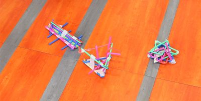
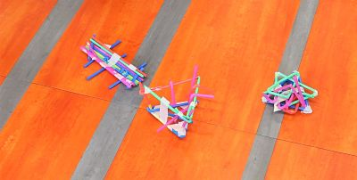

In Unit One we completed two group design challenges which involved everyday items like newspaper and colorful plastic drinking straws.
In the Newspaper Challenge my group which included myself and Catherine worked to create the tallest newspaper tower out of the class which was structurally sound enough to withstand a fan blowing on it at a low standing from about a 24 inches away. My approach to the challenge was to create something that has a triangular foundations based off of the bridges' sound structure. My design ideas was to create a tower that looked like a stack of cards by folding the newspaper into thirds. I suggested that we put a piece of paper at the bottom to stablize the structure when were turned it up on the side to make our tower taller. We brainstormed ways to add extra height and how to attact this new extension (rolled up newspaper lengthways). I thought we could adhere this extension be creating a string with newspaper and putting it through the extension and sticking the ends to the foundation of the tower. In the end our design was a failure and the extension didn't stay in place so the height wasn't there. When placed in front of the low setting fan the tower moved back, and when the fan was on high the tower moved backwards quickly and then fell over inevitably.
This image was taken on the first day of class while we were creating our newspaper tower.
In the Straw Design Challenge we were tasked with creating a catcher for a golf ball that would bounce off the straw structure, and then land back into the design. There were some limitations to the design which were that only 3 straws could be at the base and can only use 12 straws and a foot of masking tape. My aproach to the challenge was to make a triangle based basket spaced cup with a small triangle at the bottom and a bigger triangle which is connected by some straws to make it taller. The idea behind the design is that it would be like a basketball hoop by the bottom was laced with straws so the golf ball wouldn't hit the ground. In the end my group ran out of time want were unable to complete our design making it a failure. When tested the golf ball landed inside our creation but the force of the landing caused our structure to flip to the side.
 

In the first image you see my group and myself working on the golf ball catcher. The second image is of all the straw designs made in the class and our design is in the middle.